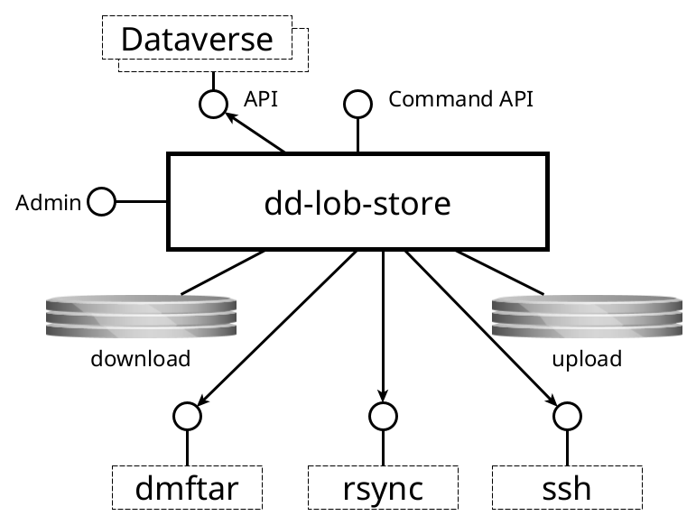

dd-lob-store¶
Manages DANS Data Vault Large Object Stores
Purpose¶
Transfers large files from Dataverse instances to a Data Vault Large Object Store.
Interfaces¶
This service has the following interfaces:

Command API¶
- Protocol type: HTTP
- Internal or external: internal
- Purpose: to manage the service including starting transfers
Admin console¶
- Protocol type: HTTP
- Internal or external: internal
- Purpose: application monitoring and management
Consumed interfaces¶
Dataverse¶
- Protocol type: HTTP
- Internal or external: internal
- Purpose: to get metadata about files to be transferred and to get the file content.
DMFTAR¶
- Protocol type: Local command invocation
- Internal or external: internal
- Purpose: to create DMFTAR archives for buckets.
rsync¶
- Protocol type: Local command invocation
- Internal or external: external
- Purpose: to transfer files from the local upload directory to SURF Data Archive
ssh¶
- Protocol type: Local command invocation
- Internal or external: external
- Purpose: to call
dmftaron the SURF Data Archive side for verification of the uploaded archive.
Processing¶
Disk quotas¶
Before explaining the processing pipeline, note that the service manages limited disk space using quotas for the download and upload folders. A disk quota manager ensures that tasks claim enough space before starting. Tasks use a polling mechanism to check for new work. If a task needs disk space and not enough is available, it is not scheduled and will retry in the next polling cycle. This applies only to the Download and Package tasks.
Request¶
The service receives requests for transfer via the API. It checks whether the SHA-1 checksum is already present in the targeted LOB-store. If so, the client
is redirected to the location of the file in the LOB store. It also checks whether a transfer request for the same SHA-1 is already present with a status other
than FAILED, REJECTED or DONE. If so, the transfer request is not created and a 409 Conflict status is returned to the caller.
Otherwise, the transfer request is created as PENDING in the database.
Inspect¶
The Inspect step retrieves the file metadata from the Dataverse instance, including the size and the SHA1-checksum. The size is stored in the transfer request
record. If the SHA-1 checksum from Dataverse does not match the one from the request, the transfer request is set to REJECTED. If the checksum is OK, the
transfer request is set to INSPECTED.
Download¶
The Download step is responsible for downloading a file. Before the task is scheduled, two disk quotas are claimed in the download folder:
- One for the size of the file (base)
- One for the size of the file plus a margin (extra).
The task downloads chunks of a configurable size (1G by default) and concatenates them at the end. The second claim is necessary for the concatenation step. The
task then computes the SHA-1 and verifies it. If it does not match the transfer request is set to REJECTED. If the checksum is OK, the transfer request status
is set to DOWNLOADED. The second of the aforementioned claims is then released.
Package¶
The Package step is responsible for packaging one or more files into an archive file using DMFTAR. It looks for DOWNLOADED files from older to newer adding
files until the total size exceeds the minimal package threshold. It then claims two quotas in the upload folder:
- One for the combined sizes of the selected files (base);
- One for the combined sizes of the selected files plus a margin (extra).
It then creates a bucket folder in the upload folder and moves the files into it. For each file the base claims on the download folder are now released.
The task now runs the configured packaging command. If that succeeds, the source files are deleted and the extra claim on the upload folder is released. The
status for the transfer requests is now set to PACKAGED.
Technical note
The status in the individual transfer request records stays on DOWNLOADED, but the API will return the status of the containing bucket for all its transfer
requests from this point on.
Upload¶
The Upload step uploads the archive file to the SURF Data Archive using rsync. The command is retried if an interruption occurs, so providing the --partial
option to rsync implements upload-resuming. On success, the status is changed to UPLOADED.
Verify¶
Finally, on finishing the transfer, the archive package is verified by running dmftar --verify on the SURF Data Archive side via ssh. If the verification
succeeds, the local copy is deleted and the transfer request is set to DONE. If it finds a checksum mismatch, the status is set to FAILED. If it fails
because of some other error, the status is left unchanged so that the task can be retried.